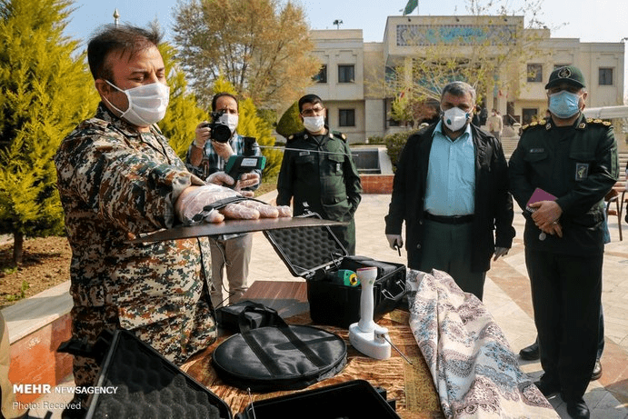

Estallan las bromas sobre el “detector de Coronavirus” presentado por Irán

El nuevo dispositivo de prueba de coronavirus presentado por el Cuerpo de la Guardia Revolucionaria de Irán se ha vuelto viral a medida que los usuarios de las redes sociales continúan bromeando sobre el artilugio, que se encuentra inspirado en un juguete publicitado como capaz de detectar metales, combustible y otras sustancias sólidas y líquidas.
El dispositivo consta de un detector portátil con una antena y una parte en forma de disco.El Comandante General de División de la IRGC, Hossein Salami, afirmó que el dispositivo había sido probado y tenía una tasa de confiabilidad de aproximadamente el 80% con un alcance de 100 metros, según Radio Farda.El portavoz del Ministerio de Salud de Irán, el Dr. Kianoush Jahanpur, declaró el miércoles que el detector 'aún no había sido aprobado'.
#Iran #IRGC unveils a new device said to be capable of real-time detection of #coronavirus in human body.The equipment, which is domestically-built uses magnetic field to detect the virus, eliminating need for blood test.It can detect infection within 100 meter range.pic.twitter.com/eZQhCVoOJ9 — Habib Abdolhossein (@HAbdolhossein) April 15, 2020
'¿Cómo puede el IRGC detectar un virus del tamaño de un nanómetro a una distancia de 100 metros, pero no puede identificar algo tan grande como un avión de pasajeros?'escribió un usuario de Twitter, refiriéndose al derribo de un avión civil ucraniano en enero por parte del IRGC, según Al-Arabiya.
El dispositivo se asemeja a un 'detector de combustible' que Irán presentó en 2017 para limitar el contrabando de combustible.
Salami dijo que el dispositivo funciona 'creando un campo magnético y usando un virus bipolar dentro del dispositivo' y agregó que puede detectar cualquier 'punto contaminado en cinco segundos'.
Un video publicado en línea mostró que el dispositivo no detecta el coronavirus durante una prueba a corta distancia.
Irán:La Guardia Revolucionaria afirma que han fabricado una máquina, que puede identificar el #coronavirus en cuerpos infectados.[1] pic.twitter.com/AoxdVO0BAG
Hesameddin Ashena, asesor del presidente Hassan Rouhani, escribió sarcásticamente sobre el dispositivo y dijo: 'No anuncie vacunas, medicamentos, kits de prueba (de coronavirus) o dispositivos de detección de virus únicos e innovadores que no hayan sido aprobados por el Ministerio de Salud'.
Incluso la cuenta de Twitter en persa del Departamento de Estado de EE.UU.Se burló del dispositivo y escribió: 'Es extraño que el dispositivo siempre emita un pitido cuando se está acercando a los guardias.¿Puede construir un dispositivo para la detección de jinns?'según Radio Farda.
El IRGC ha hecho varias afirmaciones sobre la producción de máscaras, kits de prueba y curas para el coronavirus que no se han utilizado.
El número de muertos de Irán por el nuevo coronavirus aumentó en 89 en las últimas 24 horas para llegar a 4,958 el viernes, dijo el portavoz del ministerio de salud, Kianush Jahanpur, en la televisión estatal.
El número total de casos de infección alcanzó 79,494, de los cuales 3,563 estaban en estado crítico, dijo.
Reproducción autorizada por Radio Jai citando la fuente.
Ayuda a RadioJAI AHORA!HAZ CLIC AQUÍ PARA HACER UNA DONACIÓN
Posted On: 2020-04-07T00:00:00
Posted By: Redacción Radio Jai
Content Date: 2020-04-07
Download Date: 2021-04-08
Document ID: L0C049NDM